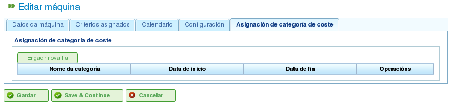

Ressursbehandling
Contents
Programmet håndterer to ulike typer ressurser: personell og maskiner.
Personalressurser
Personalressurser representerer bedriftens arbeidere. Deres viktigste egenskaper er:
- De oppfyller ett eller flere generiske kriterier eller arbeider-spesifikke kriterier.
- De kan spesifikt tildeles en oppgave.
- De kan generisk tildeles en oppgave som krever et ressurskriterium.
- De kan ha en standard- eller spesifikk kalender etter behov.
Maskinressurser
Maskinressurser representerer bedriftens maskiner. Deres viktigste egenskaper er:
- De oppfyller ett eller flere generiske kriterier eller maskin-spesifikke kriterier.
- De kan spesifikt tildeles en oppgave.
- De kan generisk tildeles en oppgave som krever et maskinkriterium.
- De kan ha en standard- eller spesifikk kalender etter behov.
- Programmet inkluderer et konfigurasjonsgrensesnitt der en alpha-verdi kan defineres for å representere maskin/arbeider-forholdet.
- Alpha-verdien angir mengden arbeidertid som kreves for å betjene maskinen. For eksempel betyr en alpha-verdi på 0,5 at hver 8 timers maskindrift krever 4 timers arbeidertid.
- Brukere kan tildele en alpha-verdi spesifikt til en arbeider, og dermed utpeke den arbeideren til å betjene maskinen for den prosentandelen av tid.
- Brukere kan også gjøre en generisk tildeling basert på et kriterium, slik at en bruksprosentandel tildeles alle ressurser som oppfyller det kriteriet og har tilgjengelig tid. Generisk tildeling fungerer på samme måte som generisk tildeling for oppgaver, som beskrevet tidligere.
Administrere ressurser
Brukere kan opprette, redigere og deaktivere (men ikke permanent slette) arbeidere og maskiner i bedriften ved å navigere til "Ressurser"-seksjonen. Denne seksjonen gir følgende funksjoner:
- Liste over arbeidere: Viser en nummerert liste over arbeidere og lar brukere administrere deres detaljer.
- Liste over maskiner: Viser en nummerert liste over maskiner og lar brukere administrere deres detaljer.
Administrere arbeidere
Arbeideradministrasjon er tilgjengelig ved å gå til "Ressurser"-seksjonen og deretter velge "Liste over arbeidere". Brukere kan redigere enhver arbeider i listen ved å klikke på standard redigeringsikon.
Når en arbeider redigeres, kan brukere åpne følgende faner:
Arbeiderdetaljer: Denne fanen lar brukere redigere arbeiderens grunnleggende identifikasjonsdetaljer:
- Fornavn
- Etternavn
- Nasjonalt ID-dokument (DNI)
- Købasert ressurs (se avsnittet om købaserte ressurser)

Redigering av arbeidernes personlige opplysninger
Kriterier: Denne fanen brukes til å konfigurere kriteriene som en arbeider oppfyller. Brukere kan tildele alle arbeider- eller generiske kriterier de anser som hensiktsmessige. Det er avgjørende at arbeidere oppfyller kriterier for å maksimere programmets funksjonalitet. For å tildele kriterier:
- Klikk på knappen "Legg til kriterier".
- Søk etter kriteriet som skal legges til og velg det mest passende.
- Klikk på "Legg til"-knappen.
- Velg startdatoen da kriteriet blir gjeldende.
- Velg sluttdatoen for å anvende kriteriet på ressursen. Denne datoen er valgfri hvis kriteriet anses som uendelig.

Knytte kriterier til arbeidere
Kalender: Denne fanen lar brukere konfigurere en spesifikk kalender for arbeideren. Alle arbeidere har en standard kalender tildelt; det er imidlertid mulig å tildele en spesifikk kalender til hver arbeider basert på en eksisterende kalender.

Kalenderfane for en ressurs
Kostnadskategori: Denne fanen lar brukere konfigurere kostnadskategorien som en arbeider oppfyller i løpet av en gitt periode. Denne informasjonen brukes til å beregne kostnadene knyttet til en arbeider på et prosjekt.

Kostnadskategorifane for en ressurs
Ressurstildeling er forklart i avsnittet "Ressurstildeling".
Administrere maskiner
Maskiner behandles som ressurser for alle formål. Derfor, i likhet med arbeidere, kan maskiner administreres og tildeles oppgaver. Ressurstildeling er dekket i avsnittet "Ressurstildeling", som vil forklare de spesifikke funksjonene til maskiner.
Maskiner administreres fra menyposten "Ressurser". Denne seksjonen har en operasjon kalt "Maskinliste", som viser bedriftens maskiner. Brukere kan redigere eller slette en maskin fra denne listen.
Når maskiner redigeres, viser systemet en serie faner for administrasjon av ulike detaljer:
Maskindetaljer: Denne fanen lar brukere redigere maskinens identifikasjonsdetaljer:
- Navn
- Maskinkode
- Beskrivelse av maskinen

Redigering av maskindetaljer
Kriterier: Som med arbeiderressurser brukes denne fanen til å legge til kriterier som maskinen oppfyller. To typer kriterier kan tildeles maskiner: maskin-spesifikke eller generiske. Arbeiderkriterier kan ikke tildeles maskiner. For å tildele kriterier:
- Klikk på knappen "Legg til kriterier".
- Søk etter kriteriet som skal legges til og velg det mest passende.
- Velg startdatoen da kriteriet blir gjeldende.
- Velg sluttdatoen for å anvende kriteriet på ressursen. Denne datoen er valgfri hvis kriteriet anses som uendelig.
- Klikk på knappen "Lagre og fortsett".

Tildele kriterier til maskiner
Kalender: Denne fanen lar brukere konfigurere en spesifikk kalender for maskinen. Alle maskiner har en standard kalender tildelt; det er imidlertid mulig å tildele en spesifikk kalender til hver maskin basert på en eksisterende kalender.

Tildele kalendere til maskiner
Maskinkonfigurasjon: Denne fanen lar brukere konfigurere forholdet mellom maskiner og arbeiderressurser. En maskin har en alpha-verdi som angir maskin/arbeider-forholdet. Som nevnt tidligere indikerer en alpha-verdi på 0,5 at 0,5 personer kreves for hver full dag med maskindrift. Basert på alpha-verdien tildeler systemet automatisk arbeidere som er assosiert med maskinen når maskinen er tildelt en oppgave. Å knytte en arbeider til en maskin kan gjøres på to måter:
- Spesifikk tildeling: Tildele et datointerval der arbeideren er tildelt maskinen. Dette er en spesifikk tildeling, ettersom systemet automatisk tildeler timer til arbeideren når maskinen er planlagt.
- Generisk tildeling: Tildele kriterier som må oppfylles av arbeidere som er tildelt maskinen. Dette skaper en generisk tildeling av arbeidere som oppfyller kriteriene.

Konfigurasjon av maskiner
Kostnadskategori: Denne fanen lar brukere konfigurere kostnadskategorien som en maskin oppfyller i løpet av en gitt periode. Denne informasjonen brukes til å beregne kostnadene knyttet til en maskin på et prosjekt.

Tildele kostnadskategorier til maskiner
Virtuelle arbeidergrupper
Programmet lar brukere opprette virtuelle arbeidergrupper, som ikke er ekte arbeidere men simulert personell. Disse gruppene gjør det mulig for brukere å modellere økt produksjonskapasitet til bestemte tidspunkter, basert på kalenderinnstillingene.
Virtuelle arbeidergrupper lar brukere vurdere hvordan prosjektplanleggingen ville bli påvirket av å ansette og tildele personell som oppfyller spesifikke kriterier, og dermed hjelpe i beslutningsprosessen.
Fanene for å opprette virtuelle arbeidergrupper er de samme som de for konfigurering av arbeidere:
- Generelle detaljer
- Tildelte kriterier
- Kalendere
- Tilknyttede timer
Forskjellen mellom virtuelle arbeidergrupper og faktiske arbeidere er at virtuelle arbeidergrupper har et navn for gruppen og en mengde, som representerer antallet virkelige personer i gruppen. Det er også et felt for kommentarer, der ytterligere informasjon kan gis, for eksempel hvilket prosjekt som ville kreve ansettelse tilsvarende den virtuelle arbeidergruppen.

Virtuelle ressurser
Købaserte ressurser
Købaserte ressurser er en spesifikk type produktivt element som enten kan være utildelt eller ha 100 % dedikasjon. Det vil si at de ikke kan ha mer enn én oppgave planlagt samtidig, og de kan ikke over-allokeres.
For hver købasert ressurs opprettes det automatisk en kø. Oppgavene som er planlagt for disse ressursene, kan administreres spesifikt ved hjelp av de tilgjengelige tildelingsmetodene, ved å opprette automatiske tildelinger mellom oppgaver og køer som oppfyller de nødvendige kriteriene, eller ved å flytte oppgaver mellom køer.